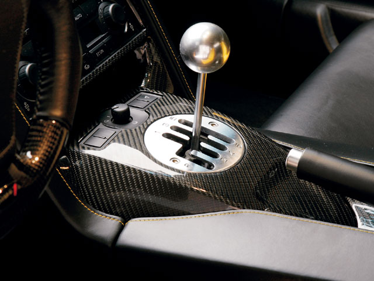

This is basically just a blog for me to not only rant about the death of the manual gearbox but also the prevalence of the automatic gearbox in high-performance cars. How has this come about? There are many factors, principle of which is high-performance cars are a lot more accessible now and regular people who may have found them hard work are now taking an interest.
Should we as car enthusiasts be worried about this? Well, yes and no. On one hand we should be thankful for the fact that high-performance cars are becoming more accessible. More people are buying them and consequently more development money is being spent making the cars faster and more reliable. As a knock-on effect, lots of other cool stuff like tyre technology gets more development mileage as well as manufacturers taking things more seriously.

I suppose where we should really worry is that most of that aforementioned development capital being spread out across many different components and this very much includes gear boxes. Many performance car manufacturers are no longer producing manual gearboxes at all where previously this was all they made. McLaren, Ferrari, Lamborghini, Pagani, Koenigsegg have all bowed out. Even more disheartening is the fact that the open-gate gearbox has also been killed-off with Audi removing it from the R8. So where does this leave us manual bores who want three pedals and a stick? We pretty much have to grin and bare it is the unfortunate answer. Andreas Preuninger, Head of GT cars at Porsche has recently announced that he will need at least 10% of new 991.2 GT3s to be manual to justify keeping the shift-all-by-yourself option for the next generation and he seems hopeful rather than confident that this will happen.
So why do people not want manual gearboxes anymore? I suppose it's a combination of factors; new-gen double-clutch gearboxes really are bloody amazing and shift gears very quickly and smoothly making track work and other high-speed driving easier. Not only this but auto or semi-auto gearboxes are easier to live with thus making high-performance cars more usable and expand their breadth of ability. I'm sure there are a couple of other small factors that I am overlooking here but for me the main reason is that the vast majority of people who buy high-performance cars are not car enthusiasts, or rather, do not take a particular pleasure from the immersive experience of operating all the controls yourself. They just want to get in, drive and not have to worry about pushing a clutch pedal down.

Will the manual gearbox eventually die out? Quite possibly although there is a die-hard following who are pretty much keeping this type of gearbox alive in high-performance cars. The stick-shift is alive and kicking in normal passenger vehicles and this could also be helping a bit and in some cases it's a USP for a manufacturer to offer both. Interestingly enough it seems to be The Yanks who are leading the way here. Now, is this down to a lack of technology or are they just super keen on manual gearboxes. I rather have my suspicions that it's the latter. After all it was they who coerced BMW into producing the F10 M5 with a manual when the rest of us went without.